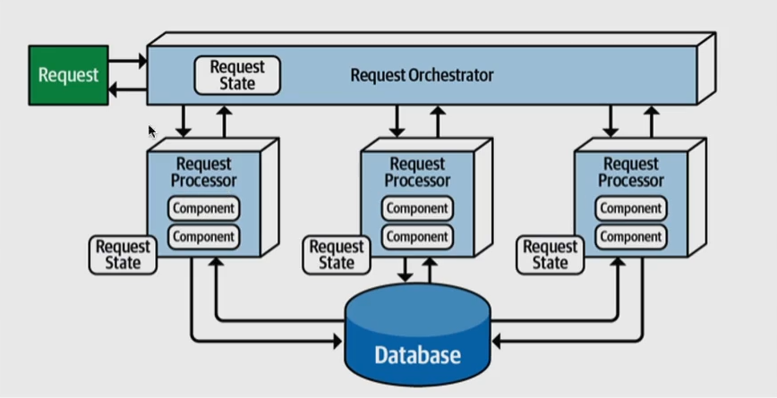

Estilo Baseado em Eventos
Estilo Baseado em Eventos
Na arquitetura baseada em eventos, o foco está na comunicação assíncrona por meio de eventos. Eventos são disparados quando algo significativo acontece em um sistema e podem ser consumidos por outros componentes ou serviços interessados. Isso permite que os sistemas sejam altamente reativos, escaláveis e interoperáveis.

Fundamentals of Software Architecture
Exemplo 1: Aplicações em Tempo Real:
Um dos exemplos mais proeminentes da arquitetura baseada em eventos é em aplicações em tempo real, como salas de bate-papo ou aplicativos de jogos multiplayer. Cada mensagem enviada por um usuário ou cada ação realizada é um evento que é transmitido a todos os participantes. Os sistemas de mensagens instantâneas, como o Slack, fazem uso extensivo da arquitetura baseada em eventos para manter os usuários sincronizados em tempo real.
Exemplo 2: Internet das Coisas (IoT):
Na IoT, sensores e dispositivos frequentemente geram eventos para relatar dados ou estados. Por exemplo, um sensor de temperatura pode gerar eventos de temperatura quando há mudanças significativas. Esses eventos são então consumidos por sistemas de monitoramento ou aplicativos que tomam ações com base nas informações recebidas.
Exemplo 3: Integração de Sistemas:
A arquitetura baseada em eventos é amplamente utilizada para integrar sistemas diversos. Imagine um sistema de comércio eletrônico que precisa integrar-se a um sistema de pagamento de terceiros. Quando um pedido é feito, um evento de pedido é gerado e transmitido ao sistema de pagamento externo, que responde com um evento de confirmação de pagamento.
Vantagens da Arquitetura Baseada em Eventos:
- Comunicação Assíncrona: A arquitetura permite que os sistemas se comuniquem de maneira assíncrona, o que pode aumentar a escalabilidade e a reatividade.
- Desacoplamento: Os emissores e consumidores de eventos são desacoplados, o que facilita a manutenção e a evolução dos sistemas.
- Interoperabilidade: A comunicação por eventos permite que sistemas diferentes se integrem de forma mais eficaz, já que podem reagir a eventos comuns.
Tipos de arquiteturas baseada em Eventos
Existem vários tipos de arquiteturas baseadas em eventos, cada um com suas características e finalidades específicas. Alguns dos tipos mais comuns são:
- Publish/Subscribe: Nesse modelo, os eventos são publicados por um emissor (publicador) e consumidos por um ou mais receptores (assinantes) que se inscrevem para receber eventos específicos. É um modelo flexível e escalável amplamente usado em sistemas distribuídos, como mensagens instantâneas, sistemas de notificações e aplicações de IoT.
- Message Queues: Nesse modelo, os eventos são colocados em filas (ou tópicos) e consumidos por processadores que estão registrados para ler essas filas. Isso é útil em cenários em que é importante garantir que os eventos sejam processados na ordem em que são recebidos, como em sistemas de processamento de pedidos e sistemas de fila de impressão.
- Topic-Based Publish/Subscribe: Semelhante ao modelo de publicação/assinatura tradicional, mas com a capacidade de usar tópicos para agrupar eventos relacionados. Os assinantes podem se inscrever em tópicos específicos para receber apenas os eventos de seu interesse.
- Event Sourcing: Neste modelo, os eventos são usados como fonte de verdade para o estado de um sistema. Todos os eventos que afetam o estado do sistema são registrados em uma fila, permitindo a reconstrução do estado do sistema a qualquer momento a partir dos eventos. É comumente usado em sistemas de negócios para manter o histórico de todas as ações realizadas.
- Message Passing: Esse modelo é comum em sistemas distribuídos, onde os componentes se comunicam enviando mensagens uns aos outros. Cada mensagem pode ser um evento que desencadeia uma ação específica no sistema.
A arquitetura baseada em eventos é uma maneira poderosa de criar sistemas altamente reativos, escaláveis e flexíveis.